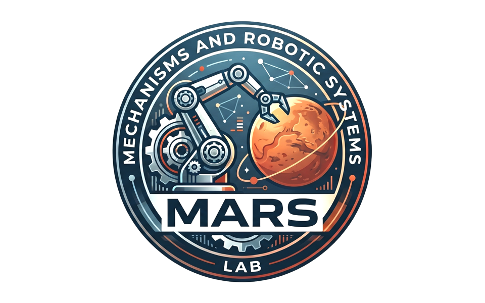
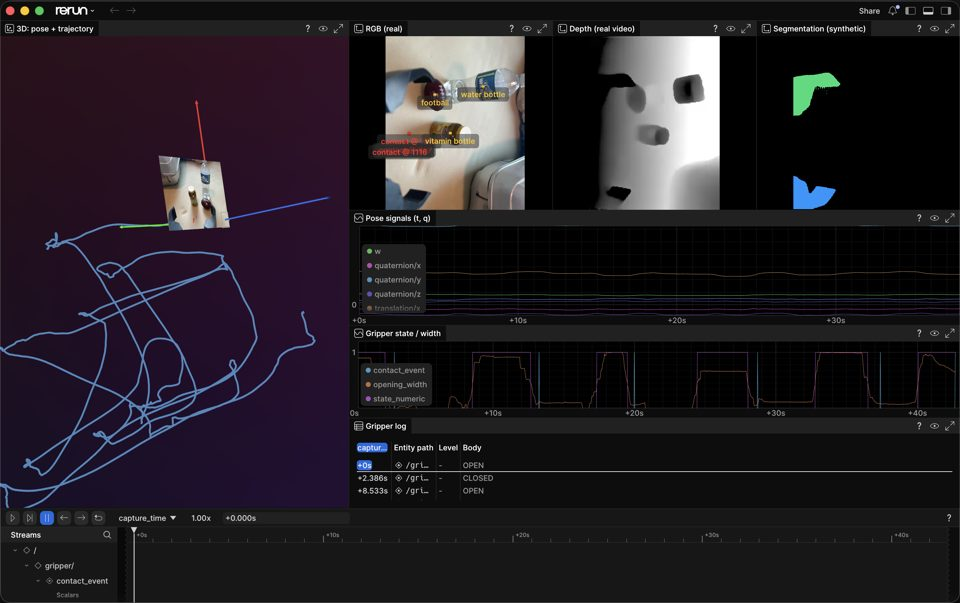
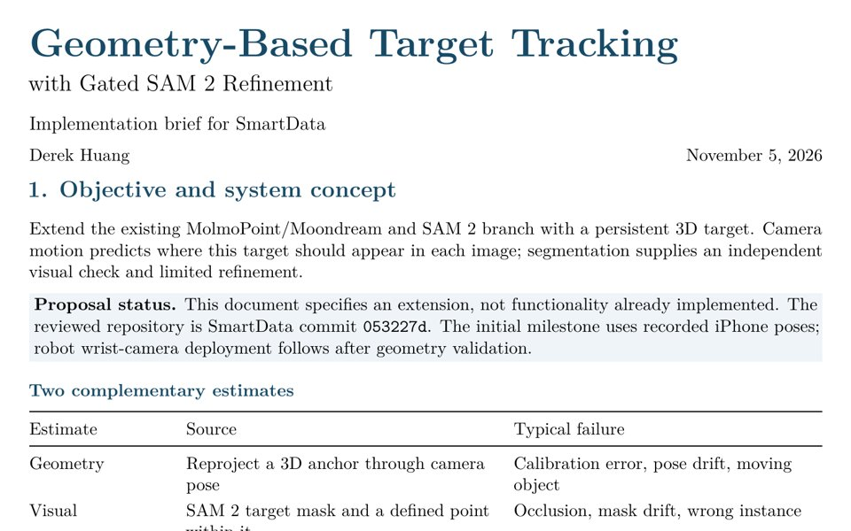

Atomic Policy: Composing Atomic Manipulation Skills with Agentic Reasoning
Under review, 2026
* Equal contribution
Abstract: to be posted.
Undergraduate, Computer Engineering / Industrial Engineering · Purdue University
I am an undergraduate student in Purdue University's College of Engineering and an undergraduate research assistant in the Purdue Mechanisms and Robotics Systems Lab (MARS), advised by Prof. Yu She.
My research focuses on learning algorithms and policies for robotic manipulation, with the goal of letting robots perform everyday manipulation tasks with human-level precision and adaptability.
Research interests: robot learning, visuotactile manipulation, world models, and imitation learning.

Under review, 2026
* Equal contribution
Abstract: to be posted.

Undergraduate research project · 2026
An open-source pipeline that turns recordings from an iPhone mounted on a handheld gripper (RGB, depth, and 6-DoF pose) into synchronized, training-ready manipulation datasets in one command. SAM 2 segments the gripper for hindsight contact labels, Moondream 2 and MolmoPoint ground the target object, Rerun shows diagnostics for each trial, and the output exports to LeRobot or Zarr.

SmartData extension · Technical proposal, Nov 2026 In progress
Extends SmartData with a persistent 3D target: calibrated camera poses predict where the object should appear in each frame, SAM 2 serves as an independent visual check with gated refinement, and large disagreement triggers re-grounding. The first milestone uses recorded iPhone poses, with robot wrist-camera deployment to follow.
Mechanisms and Robotics Systems Lab (MARS), Purdue · Prof. Yu She
Contributing to Atomic Policy, a framework that breaks long-horizon manipulation into task planning, visual grounding, action-specific Diffusion Policy skills, and execution checking, for an ongoing conference manuscript. Built the SmartData pipeline, developed UR5 and Franka Panda control workflows in MuJoCo and on hardware, and work with Ph.D. researchers on dexterous-hand and VLA/VLM policies.
Integrated Intelligent Electric Power Grid Lab, Purdue · Prof. Andrew Liu
Built inputs for the SWITCH linear-programming capacity expansion model to study resource adequacy in the MISO region under decarbonization, using stochastic multi-weather-year scenarios for renewables and load.
General Electric Vertically Integrated Project, Purdue
Implemented forward/inverse kinematics, a Jacobian-based IK solver with singularity handling, and a Cartesian PD controller for a 2-link arm, simulated in MuJoCo.
MIT · Prof. Manolis Kellis
Semantic segmentation and classification of liver cancer histopathology images with one-shot learning; co-wrote a paper and presented findings to Prof. Kellis.
Industry-sponsored capstone, Industrial Engineering, Purdue · Client point of contact
Lead communication between our student team and a logistics-industry client on modeling package arrivals and lane congestion at a high-volume sorting facility. When data access and scope constraints made the original plan infeasible, facilitated client and team discussions to reset the project around achievable Phase 1 goals: arrival modeling and capacity-based lane-risk indicators. The team built a five-minute flow model from container receipt through induction, sorting, and capacity-limited lane clearing, flagging fifteen-minute windows where incoming workload exceeds modeled capacity.
Innogrit
Ran chip validation tests and analyzed NAND endurance, latency, and error behavior, debugging over I²C and SMBus with Python, C/C++, and Verilog.
Purdue Chinese Students and Scholars Association
Coordinate student event logistics, maintain alumni relationships, and host company information sessions.
IEEE/CVF Conference on Computer Vision and Pattern Recognition (CVPR 2027)